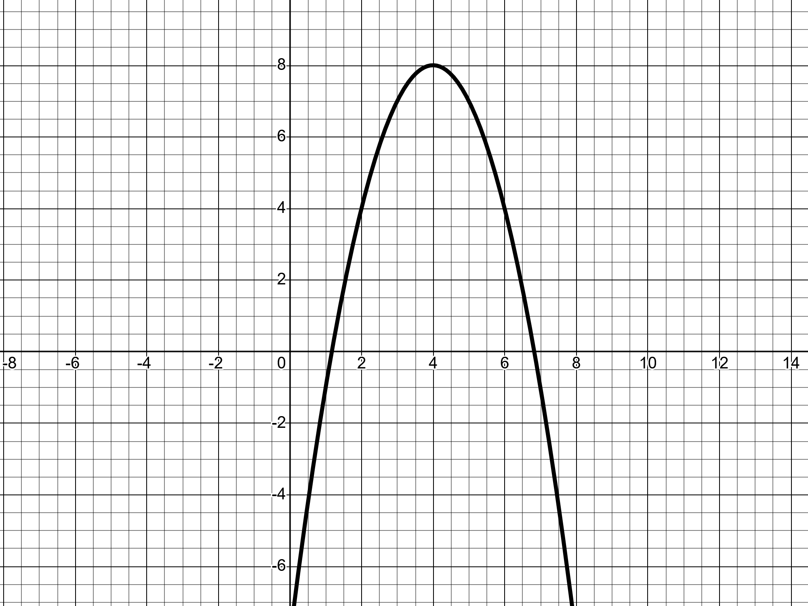
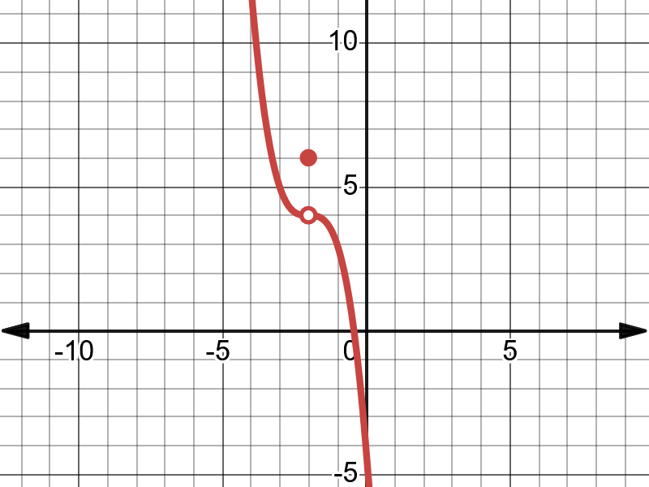

Chapter 3 Limits and Continuity
3.1 The Limit of a Function
Intuitive definition of limit
Definition 3.1 (Left Limit) We write \(\lim_{{x \to c^-}} f(x) = L\) if the number \(f(x)\) (the function height) keeps getting close to \(L\) as \(x\) approaches \(c\) from the left.
Definition 3.2 (Right Limit) We write \(\lim_{{x \to c^+}} f(x) = L\) if the number \(f(x)\) (the function height) keeps getting close to \(L\) as \(x\) approaches \(c\) from the right. }
Left Limit and Right Limit are called one-sided limits.
Definition 3.3 (Two-sided Limit) We write
\(\lim_{{x \to c}} f(x) = L\)
if the number \(f(x)\) (the function height) keeps getting close to the same value \(L\) as \(x\) approaches \(c\) from either direction.
Theorem 3.1 The two-sided limit
\[\lim_{{x \to c}} f(x)\]
exists if and only if the two one-sided limits
\[\lim_{{x \to c^-}} f(x) \quad \text{and} \quad \lim_{{x \to c^+}} f(x)\]
both exist and are equal. Furthermore, if
\[\lim_{{x \to c^-}} f(x) = L \quad \text{and} \quad \lim_{{x \to c^+}} f(x) = L\]
then
\[\lim_{{x \to c}} f(x) = L.\]
Example 3.1 (Evaluating limits using a graph) For each of the following functions, write down the left limit, right limit, two-sided limit, and the function value at the given point. If any limit is undefined, write "UND".
- at \(x = 4\)

- at \(x = 3\)

- at \(x = -2\)

- at \(x = 3\)

Remark. In Example @ref{exm:ex315}
part (a), you can observe that the limit (two-sided limit) at \(x = 2\) is equal to the function value at that point.
In part (d), you can observe that the limit (two-sided limit) at \(x = 3\) is different from the function value at that point.
In general, there is no connection between the limit of a function at a point (\(\lim_{{x \to c}} f(x)\)) and the value of the function (\(f(c)\)) at that point.
Example 3.2
| x | f(x) |
|---|---|
| -0.05 | 2.0025 |
| -0.25 | 2.0625 |
| -0.01 | 2.0001 |
| -0.001 | 2.000001 |
| 0.001 | 2.000001 |
| 0.01 | 2.0001 |
| 0.25 | 2.0625 |
| 0.5 | 2.25 |
Observing the table, we can say there is a good chance that
\[\lim_{{x \to 0}} f(x) = 2.\]
One cannot use a table to calculate the limit exactly (Why?).
Example 3.3 The following figure shows the graph of \(f(x) = \sin\left(\frac{1}{x}\right)\). Observe that
\[\lim_{{x \to 0}} \sin\left(\frac{1}{x}\right)\]
is undefined.
The graph is better than the table when we use Definition 3.1. In this course, we stick with Definition 3.1. It’s not rigorous enough; you will learn the formal \(\epsilon - \delta\) definition listed below in advanced math classes.
Definition 3.4 Let \(f: \mathbb{R} \to \mathbb{R}\) and \(L \in \mathbb{R}\). We say that the limit of \(f\) at \(c\) is \(L\) and denote it by
\[\lim_{{x \to c}} f(x) = L,\]
if for each \(\epsilon > 0\), there exists \(\delta > 0\) such that:
\[|x - c| < \delta \Rightarrow |f(x) - L| < \epsilon.\]
3.2 Continuity
In the most basic sense, a continuous function can be sketched in one continuous stroke without lifting a pen or pencil. We would need to lift our pencil in drawing a function because it has a jump or hole in its graph. If there is a jump or hole in the graph, at that point, either the limit or function value is undefined, or they take different values. This leads to the following definition.
Definition 3.5 (Continuity at a point) We say a function is continuous at a point \(x = c\), if the number \(f(x)\) (the function height) keeps getting close to \(f(c)\) as \(x\) approaches \(c\) from either direction. A function that is not continuous at \(c\) is said to have a discontinuity at that point.
Following theorem is straightforward.
Theorem 3.2 (Continuity theorem I) A function \(f\) is continuous at a point \(x = c\) if the following conditions are satisfied:
\(f(c)\) is defined;
\(\lim_{{x \to c}} f(x)\) is defined;
\(\lim_{{x \to c}} f(x) = f(c)\).
Example 3.4 For each of the following functions, state whether the function is continuous at the given point. If not, state which condition of continuity is broken at that point.
- at \(x = 4\)
- at \(x = 3\)
- at \(x = -2\)
- at \(x = 3\)
Definition 3.6 (Continuity of a function) A function is continuous on a set \(X\) if it is continuous at every point of \(X\).
Definition 3.7 Let \(f: \mathbb{R} \to \mathbb{R}\) and \(c \in \mathbb{R}\). \(f\) is continuous at \(c\) if for each \(\epsilon > 0\), there exists \(\delta > 0\) such that:
\[|x - c| < \delta \Rightarrow |f(x) - f(c)| < \epsilon.\]
3.3 Algebraic computation of limits
Theorem 3.3 (Basic properties and rules for limits) For any real number \(c\), suppose that functions \(f\) and \(g\) both have limits at \(x = c\).
Constant rule: \(\lim_{{x \to c}} k = k\).
Multiple rule: \(\lim_{{x \to c}} [kf(x)] = k \lim_{{x \to c}} f(x)\) for any constant \(k\).
Sum rule: \(\lim_{{x \to c}} [f(x) + g(x)] = \lim_{{x \to c}} f(x) + \lim_{{x \to c}} g(x)\).
Difference rule: \(\lim_{{x \to c}} [f(x) - g(x)] = \lim_{{x \to c}} f(x) - \lim_{{x \to c}} g(x)\).
Product rule: \(\lim_{{x \to c}} [f(x) g(x)] = [\lim_{{x \to c}} f(x)][\lim_{{x \to c}} g(x)]\).
Quotient rule: \(\lim_{{x \to c}} \frac{f(x)}{g(x)} = \frac{\lim_{{x \to c}} f(x)}{\lim_{{x \to c}} g(x)}\) if \(\lim_{{x \to c}} g(x) \neq 0\).
Power rule: \(\lim_{{x \to c}} [f(x)]^n = [\lim_{{x \to c}} f(x)]^n\).
By using the \(\epsilon - \delta\) definition of continuity and the above theorem, we can establish the continuity of basic functions.
Example 3.5 Prove that \(f(x) = x\) is continuous on the set of real numbers.
Proof. For any \(c \in \mathbb{R}\) and \(\epsilon > 0\) let \(\delta = \epsilon\).
\[|x - c| < \delta \Rightarrow |x - c| < \epsilon \Rightarrow |f(x) - f(c)| < \epsilon\]
Theorem 3.4 (Continuity theorem II) If \(f\) is a polynomial function, a rational function, a trigonometric function, a trigonometric inverse function, an exponential function, or a logarithmic function, then \(f\) is continuous at any number \(x = c\) for which \(f(c)\) is defined.
Proof. Omitted
Remark. We can plug in the value to find the limit only if we know that the function is continuous at that point.
Example 3.6 Evaluate each of the following limits:
- \(\lim_{{x \to \frac{\pi}{6}}} \sin(x)\)
- \(\lim_{{x \to \frac{\pi}{6}}} \cos(x)\)
- \(\lim_{{x \to -\frac{\pi}{4}}} \sin(x)\)
- \(\lim_{{x \to 2}} x\)
- \(\lim_{{x \to \frac{\pi}{4}}} [\sin(x) + 2x + 3]\)
- \(\lim_{{x \to \frac{\sqrt{3}}{2}}} [\sin^{-1}(x) + \cos^{-1}(x)]\)
- \(\lim_{{x \to 2}} [2x^2 + 5x + 6]\)
- \(\lim_{{x \to 6}} [\ln(x) + e^x]\)
- \(\lim_{{x \to \frac{\pi}{6}}} \tan(x)\)
- \(\lim_{{x \to 2}} [2x^2 + 5x + 6]\)
- \(\lim_{{x \to \frac{\pi}{4}}} \frac{\sin(x) + \cos(x)}{\sin(x) \cos(x)}\)
3.4 Limits involving indeterminate forms \(\frac{0}{0}\)
Rational functions
Evaluate \(\lim_{{x \to 5}} \frac{x^2 - 11x + 30}{x^2 - 25}\)
Let us try applying the Quotient rule:
\[\lim_{{x \to 5}} \frac{x^2 - 11x + 30}{x^2 - 25} = \frac{\lim_{{x \to 5}} [x^2 - 11x + 30]}{\lim_{{x \to 5}} [x^2 - 25]} = \frac{25 - 55 + 30}{25 - 25} = \frac{0}{0}\]
The denominator (namely \(\lim_{{x \to 5}} [x^2 - 25]\)) is zero; therefore, we cannot use the Quotient rule here.
Remark. (Indeterminate form) In calculus and other branches of mathematical analysis, an indeterminate form is an algebraic expression obtained in the context of limits. Limits involving algebraic operations are often performed by replacing expressions by their limits; if the expression obtained after this substitution does not give enough information to determine the original limit, it is known as an indeterminate form. \(\frac{0}{0}\) is one of the indeterminate forms you will encounter in calculus 1.
Let us examine a method that can be used to go around this problem. We want to evaluate \(\lim_{{x \to 5}} \frac{x^2 - 11x + 30}{x^2 - 25}\).
Set \(f(x) = \frac{x^2 - 11x + 30}{x^2 - 25}\) and we are looking for \(\lim_{{x \to 5}} f(x)\). Let us take a closer look at \(f(x)\):
\[f(x) = \frac{x^2 - 11x + 30}{x^2 - 25} = \frac{(x - 5)(x - 6)}{(x - 5)(x + 5)} = \frac{x - 6}{x + 5} \quad \text{when } x \neq \pm 5\]
Still, 5 is not in the domain of \(f\). Define a new function \(g(x)\) by \(g(x) = \frac{x - 6}{x + 5}\). Observe that \(g(x)\) is originally defined as \(\frac{x - 6}{x + 5}\) and 5 is in the domain of \(g(x)\).
Now look at the graphs of \(f(x)\) and \(g(x)\). Observe that \(g(x)\) is defined and continuous at \(x = 5\). Therefore, we can plug in 5 to get \(\lim_{{x \to 5}} g(x)\):
\[\lim_{{x \to 5}} g(x) = g(5) = \frac{5 - 6}{5 + 5} = -\frac{1}{10}\]
Of course, the graph of \(f(x)\) has a hole at 5. Therefore, \(f\) is not continuous at 5. We cannot plug in 5 to get \(\lim_{{x \to 5}} f(x)\), but comparing the graphs of \(f(x)\) and \(g(x)\), one can observe that:
\[\lim_{{x \to 5}} f(x) = \lim_{{x \to 5}} g(x)\]
Since \(\lim_{{x \to 5}} g(x) = -\frac{1}{10}\), \(\lim_{{x \to 5}} f(x)\) is also \(-\frac{1}{10}\).
The following summarizes the observations we made. Suppose \(R(x) = \frac{f(x)}{g(x)}\) and we want to evaluate \(\lim_{{x \to c}} R(x)\). Use of the quotient rule leads to the indeterminate form \(\frac{0}{0}\). The following steps might help to go around this problem:
Factor out the numerator and denominator.
Cancel the common factors.
Use limits rules to evaluate the limit of the remaining function.
3.5 Limits Involving Infinity
3.5.1 Infinite Limits
It may happen that a function \(f\) does not have a finite limit as \(x \rightarrow c\). When \(\lim _{x \rightarrow c} f(x)\) fails to exist, the function values \(f(x)\) are said to diverge as \(x \rightarrow c\).
Example 3.7 Consider the function \(f(x)=\frac{1}{x^{2}}\).
| \(x\) | \(f(x)\) |
|---|---|
| 0.1 | 100 |
| 0.01 | 10000 |
| 0.001 | \(10^{6}\) |
| 0.0001 | \(10^{8}\) |
| 0.00001 | \(10^{10}\) |
As \(x \rightarrow 0, f(x) \rightarrow \infty\). The graph of \(f(x)=\frac{1}{x^{2}}\) illustrates this behavior.

Definition 3.8 A function \(f\) that increases or decreases without bound as \(x\) approaches \(c\) is said to tend to infinity ( \(\infty\) ) at c. We indicate this behavior by writing:
\[ \lim _{x \rightarrow c} f(x)=\infty \quad \text { or } \quad \lim _{x \rightarrow c} f(x)=-\infty \]
Example 3.8 \[ \lim _{x \rightarrow 0} \frac{1}{x^{2}}=\infty \]
\[ \lim _{x \rightarrow 0^{-}} \frac{1}{x}=-\infty \quad \text { and } \quad \lim _{x \rightarrow 0^{+}} \frac{1}{x}=\infty \]
The graph of \(f(x)=\frac{1}{x}\) shows this behavior:
Example 3.9 Evaluate the limit:
\[ \lim _{x \rightarrow 1}\left(\frac{1}{x^{2}-1}-1\right) \]
Solution: We begin by substituting \(x=1+h\), where \(h \rightarrow 0\). The expression becomes:
\[ \frac{1}{(1+h)^{2}-1}-1 \]
Expanding \((1+h)^{2}\) :
\[ (1+h)^{2}-1=2 h+h^{2} \]
So, the expression becomes:
\[ \frac{1}{2 h+h^{2}}-1=\frac{1-\left(2 h+h^{2}\right)}{2 h+h^{2}}=\frac{1-2 h-h^{2}}{2 h+h^{2}} \]
One-Sided Limits: As \(h \rightarrow 0\) :
- For \(h \rightarrow 0^{+}\)(approaching from the right):
For \(h>0\), we analyze the expression \(\frac{1}{2 h+h^{2}}\). Since \(h\) is positive and small, the term \(h^{2}\) is negligible compared to \(2 h\), so the expression behaves similarly to \(\frac{1}{2 h}\).
As \(h \rightarrow 0^{+}, 2 h\) becomes very small, and the reciprocal \(\frac{1}{2 h}\) grows without bound towards \(+\infty\). Thus, the limit from the right is \(+\infty\).
- For \(h \rightarrow 0^{-}\)(approaching from the left):
For \(h<0\), the expression \(\frac{1}{2 h+h^{2}}\) behaves similarly to \(\frac{1}{2 h}\), but since \(h\) is negative, \(\frac{1}{2 h}\) becomes negative. As \(h \rightarrow 0^{-}, 2 h\) still becomes very small, but the expression grows large and negative.
Thus, the limit from the left is \(-\infty\). Since the one-sided limits are not equal, the two-sided limit does not exist. Thus, the limit is:
\[ \lim _{x \rightarrow 1}\left(\frac{1}{x^{2}-1}-1\right) \text { does not exist. } \]
Example 3.10 Evaluate the limit:
\[ \lim \frac{x^{2}+3 x-4}{2} \]
Solution Step 1: Factor the numerator and denominator:
\[ \frac{x^{2}+3 x-4}{x^{2}-4}=\frac{(x-1)(x+4)}{(x-2)(x+2)} \]
Step 2: Substitute \(x=2+h\), where \(h \rightarrow 0\) : Substitute \(x=2+h\) into the factored form:
- The numerator becomes:
\[ (x-1)(x+4)=(2+h-1)(2+h+4)=(1+h)(6+h) \]
- The denominator becomes:
\[ (x-2)(x+2)=(2+h-2)(2+h+2)=h(4+h) \]
Thus, the expression becomes:
\[ \frac{(1+h)(6+h)}{h(4+h)}=\frac{6+7 h+h^{2}}{4 h+h^{2}} \]
Step 3: Analyze the one-sided limits: Case 1: \(h \rightarrow 0^{+}\)(from the right): As \(h \rightarrow 0^{+}\), the numerator behaves like \(6+7 h\) and the denominator behaves like \(4 h\), which is positive. The expression behaves like:
\[ \frac{6+7 h}{4 h} \rightarrow \frac{6}{4 h} \rightarrow+\infty \quad\left(\text { as } h \rightarrow 0^{+}\right) \]
Thus, the limit from the right is \(+\infty\).
Case 2: \(h \rightarrow 0^{-}\)(from the left):
As \(h \rightarrow 0^{-}\), the numerator behaves like \(6+7 h\) and the denominator behaves like \(4 h\), which is negative. The expression behaves like:
\[ \frac{6+7 h}{4 h} \rightarrow \frac{6}{4 h} \rightarrow-\infty \quad\left(\text { as } h \rightarrow 0^{-}\right) \]
Thus, the limit from the left is \(-\infty\). Step 4: Conclusion: Since the one-sided limits are not equal (the limit from the right is \(+\infty\) and the limit from the left is \(-\infty\) ), the two-sided limit does not exist.
\[ \lim _{x \rightarrow 2} \frac{x^{2}+3 x-4}{x^{2}-4} \text { does not exist.} \]
Example 3.11 Evaluate the limit:
\[ \lim _{x \rightarrow 0} \frac{1}{\sin (x)} \]
3.5.2 The Nature of Discontinuities
Discontinuities can be classified as jump, infinite, removable, or oscillating.
- Removable Discontinuities: The limit exists finitely. Removable discontinuities can be “fixed” by redefining the function.
- Jump Discontinuities: Both one-sided limits exist and are finite, but have different values.
- Infinite Discontinuities: An infinite discontinuity exists when one of the one-sided limits of the function is infinite.
- Oscillating Discontinuities: An oscillating discontinuity exists when the values of the function appear to be approaching two or more values simultaneously.
3.5.3 Examples of Discontinuities
Example 3.12 (Removable Discontinuity). Consider the function \(f(x)=\frac{x^{2}-1}{x-1}\). The function has a removable discontinuity at \(x=1\).
\[ f(x)=\frac{(x-1)(x+1)}{x-1}=x+1 \quad \text { for } \quad x \neq 1 \]
By defining \(f(1)=2\), the discontinuity is removed.
Example 3.13 (Jump Discontinuity) Consider the function
\[ f(x)= \begin{cases}x^{2} & \text { if } x<1 \\ 2-x & \text { if } x \geq 1\end{cases} \]
The function has a jump discontinuity at \(x=1\).
Example 3.14 (Infinite Discontinuity) Consider the function
\[ f(x)=\frac{1}{x-1} \]
The function has an infinite discontinuity at \(x=1\).
Example 3.15 (Oscillating Discontinuity). Consider the function
\[ f(x)=\sin \left(\frac{1}{x}\right) \]
The function has an oscillating discontinuity at \(x=0\).
Example 3.16 Evaluate the limit:
\[ \lim _{x \rightarrow 2} \frac{x^{2}-4}{x-2} \]
Solution. The function has a removable discontinuity at \(x=2\). Factor the numerator:
\[ \frac{x^{2}-4}{x-2}=\frac{(x-2)(x+2)}{x-2}=x+2 \quad \text { for } \quad x \neq 2 \]
Thus,
\[ \lim _{x \rightarrow 2} \frac{x^{2}-4}{x-2}=\lim _{x \rightarrow 2}(x+2)=4 \]
Example 3.17 Determine the continuity of the function:
\[ f(x)= \begin{cases}3 x+1 & \text { if } x<0 \\ 2 x-1 & \text { if } x>0\end{cases} \]
Solution: Check the limits from both sides at \(x=0\) :
\[ \lim _{x \rightarrow 0^{-}}(3 x+1)=1 \quad \text { and } \quad \lim _{x \rightarrow 0^{+}}(2 x-1)=-1 \]
The function has a jump discontinuity at \(x=0\).
Example 3.18 Given
\[ g(x)=\frac{x-2}{(x-1)^{2}(x-3)} \]
- \(\lim _{x \rightarrow 1} g(x)\)
- \(\lim _{x \rightarrow 3} g(x)\)
Solution.
- \(\lim _{x \rightarrow 1} g(x)\)
Let’s use the substitution \(x=1+h\), where \(h \rightarrow 0\).
\[ g(1+h)=\frac{(1+h)-2}{((1+h)-1)^{2}((1+h)-3)}=\frac{h-1}{h^{2}(h-2)}=\frac{h-1}{h^{3}-2 h^{2}}=\frac{1-\frac{1}{h}}{h^{2}-2 h} \]
As \(h \rightarrow 0\), we need to consider the behavior of the function from both sides of \(x=1\) :
- For \(h \rightarrow 0^{+}\)(approaching 1 from the right):
\[ g(1+h) \approx \frac{-1}{h^{2}} \quad \Rightarrow \quad \lim _{h \rightarrow 0^{+}} g(1+h)=-\infty \]
- For \(h \rightarrow 0^{-}\)(approaching 1 from the left):
\[ g(1+h) \approx \frac{-1}{h^{2}} \quad \Rightarrow \quad \lim _{h \rightarrow 0^{-}} g(1+h)=-\infty \]
Since both one-sided limits approach \(-\infty\) :
\[ \lim _{x \rightarrow 1} g(x)=-\infty \]
- \(\lim _{x \rightarrow 3} g(x)\)
Let’s use the substitution \(x=3+h\), where \(h \rightarrow 0\).
\[ g(3+h)=\frac{(3+h)-2}{((3+h)-1)^{2}((3+h)-3)}=\frac{1+h}{h(2+h)^{2}}=\frac{1+h}{h\left(4+4 h+h^{2}\right)} \approx \frac{1}{4 h} \quad \text { as } \quad h \rightarrow 0 \]
As \(h \rightarrow 0\), we need to consider the behavior of the function from both sides of \(x=3\) :
- For \(h \rightarrow 0^{+}\)(approaching 3 from the right):
\[ g(3+h) \approx \frac{1}{4 h} \quad \Rightarrow \quad \lim _{h \rightarrow 0^{+}} g(3+h)=+\infty \]
- For \(h \rightarrow 0^{-}\)(approaching 3 from the left):
\[ g(3+h) \approx \frac{1}{4 h} \quad \Rightarrow \quad \lim _{h \rightarrow 0^{-}} g(3+h)=-\infty \]
Since the one-sided limits approach \(\pm \infty\) :
\[ \lim _{x \rightarrow 3} g(x) \text { does not exist. } \]
\[ \lim _{x \rightarrow-4^{+}} \frac{-x^{3}+5 x^{2}-6 x}{-x^{3}-4 x^{2}} \]
Definition 3.9 (Vertical Asymptote). If \(\lim _{x \rightarrow a} f(x)= \pm \infty, \lim _{x \rightarrow a^{+}} f(x)= \pm \infty\), or \(\lim _{x \rightarrow a^{-}} f(x)= \pm \infty\), the line \(x=a\) is called a vertical asymptote of \(f\).
Solution.
- The numerator is:
\[ -x^{3}+5 x^{2}-6 x=-x\left(x^{2}-5 x+6\right) \]
Factorizing \(x^{2}-5 x+6\) :
\[ x^{2}-5 x+6=(x-2)(x-3) \]
Thus, the numerator becomes:
\[ -x^{3}+5 x^{2}-6 x=-x(x-2)(x-3) \]
- The denominator is:
\[ -x^{3}-4 x^{2}=-x^{2}(x+4) \]
Step 2: Rewrite the limit
Substitute the factored forms into the limit:
\[ \lim _{x \rightarrow-4^{+}} \frac{-x(x-2)(x-3)}{-x^{2}(x+4)} \]
Simplify by canceling \(-x(\) note \(x \neq 0)\) :
\[ \lim _{x \rightarrow-4^{+}} \frac{(x-2)(x-3)}{x(x+4)} \]
Step 3: Substitute \(x=-4+h\)
Let \(x=-4+h\), where \(h \rightarrow 0^{+}\). Then: \(x+4=(-4+h)+4=h, \quad x=-4+h, \quad x-2=(-4+h)-2=-6+h, \quad x-3=(-4+h)-3=-7+h\). Substitute these into the simplified expression:
\[ \frac{(x-2)(x-3)}{x(x+4)}=\frac{(-6+h)(-7+h)}{(-4+h) h} \]
Step 4: Analyze dominant terms as \(h \rightarrow 0^{+}\)
For small \(h\), the dominant terms are:
\[ -6+h \approx-6, \quad-7+h \approx-7, \quad-4+h \approx-4, \quad x+4 \approx h . \]
Thus, the expression becomes approximately:
\[ \frac{(-6)(-7)}{(-4)(h)} \]
Simplify the constants:
\[ \frac{(-6)(-7)}{(-4)(h)}=\frac{42}{-4 h}=-\frac{42}{4 h}=-\frac{21}{2 h} . \]
Step 5: Take the limit as \(h \rightarrow 0^{+}\)
As \(h \rightarrow 0^{+}, \frac{1}{h} \rightarrow \infty\). Therefore:
\[ -\frac{21}{2 h} \rightarrow-\infty \]
Final Answer
The limit is:
\[ \lim _{x \rightarrow-4^{+}} \frac{-x^{3}+5 x^{2}-6 x}{-x^{3}-4 x^{2}}=-\infty \]
Example 3.19 Let
\[ f(x)=\frac{x^{2}-4 x+3}{x^{2}-1} \] Evaluate the following limits and find the vertical asymptotes of \(f\) . Verify your work with a graphing utility.
- \(\lim _{x \rightarrow 1} f(x)\)
- \(\lim _{x \rightarrow-1^{-}} f(x)\)
- \(\lim _{x \rightarrow-1^{+}} f(x)\)
Solution. We are given the function
\[ f(x)=\frac{x^{2}-4 x+3}{x^{2}-1} \]
First, we factorize both the numerator and the denominator:
\[ x^{2}-4 x+3=(x-3)(x-1), \quad x^{2}-1=(x-1)(x+1) . \]
Thus, the function becomes:
\[ f(x)=\frac{(x-3)(x-1)}{(x-1)(x+1)} \]
We can cancel out the common factor of \((x-1)(\) note that \(x \neq 1)\) :
\[ f(x)=\frac{x-3}{x+1}, \quad \text { for } x \neq 1 \]
Vertical Asymptotes
Vertical asymptotes occur where the denominator is zero but the numerator is not zero. From the factorized form, we can see that: - The denominator \(x^{2}-1=(x-1)(x+1)\) is zero when \(x=1\) or \(x=-1\). - At \(x=1\), the factor \((x-1)\) cancels out, so there is a removable discontinuity (not a vertical asymptote). - At \(x=-1\), the denominator is zero, but the numerator \(x-3\) is not zero. Therefore, there is a vertical asymptote at \(x=-1\).
Thus, the function has a vertical asymptote at \(x=-1\). Step-by-Step Evaluation of Limits
- \(\lim _{x \rightarrow 1} f(x)\)
Since \(x=1\) is a removable discontinuity, we evaluate the limit using the simplified function:
\[ f(x)=\frac{x-3}{x+1} \]
Substitute \(x=1\) :
\[ \begin{gathered} \lim _{x \rightarrow 1} f(x)=\frac{1-3}{1+1}=\frac{-2}{2}=-1 \\ \lim _{x \rightarrow 1} f(x)=-1 \end{gathered} \]
- \(\lim _{x \rightarrow-1^{-}} f(x)\)
Now, we substitute \(x=-1+h\), where \(h \rightarrow 0^{-}\)(approaching -1 from the left). We have:
\[ x-3=(-1+h)-3=-4+h, \quad x+1=(-1+h)+1=h . \]
Thus, the function becomes:
\[ f(x)=\frac{x-3}{x+1}=\frac{-4+h}{h} . \]
For small \(h\), the dominant terms are:
\[ f(x) \approx \frac{-4}{h} . \]
As \(h \rightarrow 0^{-}\), the expression \(\frac{-4}{h}\) approaches \(+\infty\) because \(h\) is negative.
\[ \lim _{x \rightarrow-1^{-}} f(x)=+\infty \] c) \(\lim _{x \rightarrow-1^{+}} f(x)\)
Similarly, let \(x=-1+h\), where \(h \rightarrow 0^{+}\)(approaching -1 from the right). We have:
\[ x-3=(-1+h)-3=-4+h, \quad x+1=(-1+h)+1=h . \]
Thus, the function becomes:
\[ f(x)=\frac{x-3}{x+1}=\frac{-4+h}{h} . \]
For small \(h\), the dominant terms are:
\[ f(x) \approx \frac{-4}{h} \]
As \(h \rightarrow 0^{+}\), the expression \(\frac{-4}{h}\) approaches \(-\infty\) because \(h\) is positive.
\[ \lim _{x \rightarrow-1^{+}} f(x)=-\infty \]
Conclusion
- \(\lim _{x \rightarrow 1} f(x)=-1\),
- \(\lim _{x \rightarrow-1^{-}} f(x)=+\infty\),
- \(\lim _{x \rightarrow-1^{+}} f(x)=-\infty\).
The function has a vertical asymptote at \(x=-1\).